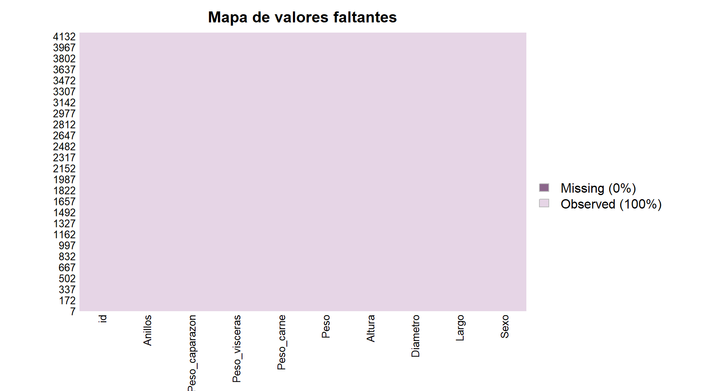

Capitulo 5 Calidad de los datos
5.1 Valores faltantes
## NA_Sexo NA_Largo NA_Diametro NA_Altura NA_Peso NA_Peso_carne NA_Peso_visceras
## 1 0 0 0 0 0 0 0
## NA_Peso_caparazon NA_Anillos NA_id
## 1 0 0 0Se observa que todas las variables evaluadas presentan 0 datos faltantes, lo que indica que no hay valores vacíos en los registros.

5.2 Valores imposibles
altura_cero <- data2 %>% filter(Altura == 0)
# Un componente no puede pesar más que el abulón completo
componente_mayor <- data2 %>%
filter(Peso_carne > Peso | Peso_visceras > Peso | Peso_caparazon > Peso)
tibble(
Revision = c("Altura igual a 0", "Un componente pesa más que el total"),
Casos = c(nrow(altura_cero), nrow(componente_mayor))
) %>% tabla("Revisión de valores imposibles")| Revision | Casos |
|---|---|
| Altura igual a 0 | 2 |
| Un componente pesa más que el total | 5 |
## Sexo Largo Diametro Altura Peso Peso_carne Peso_visceras Peso_caparazon
## 1 Infante 86 68 0 85.6 41.3 17.2 23.0
## 2 Infante 63 46 0 26.8 11.5 5.7 70.1
## Anillos id
## 1 8 1258
## 2 6 3997## Sexo Largo Diametro Altura Peso Peso_carne Peso_visceras Peso_caparazon
## 1 Infante 62 45 14 21.1 87.0 3.0 8.0
## 2 Infante 55 41 14 21.1 99.0 3.8 6.3
## 3 Infante 95 73 20 26.3 40.5 17.5 24.6
## 4 Infante 71 54 15 40.8 60.9 9.2 11.9
## 5 Infante 63 46 0 26.8 11.5 5.7 70.1
## Anillos id
## 1 5 1217
## 2 5 2628
## 3 7 2642
## 4 7 3087
## 5 6 3997Se realizó una revisión de valores inconsistentes en la base de datos, encontrando 1 observación con altura igual a cero y 5 observaciones en las que alguno de los componentes del abalone supera su peso total. De estos últimos casos, en cuatro el peso de la carne supera el peso total, mientras que en uno el peso del caparazón es superior.
5.3 Depuración
abalone <- data2 %>%
filter(
Altura > 0,
Peso_carne <= Peso, Peso_visceras <= Peso, Peso_caparazon <= Peso
)
n_eliminadas <- nrow(data2) - nrow(abalone)
dim(abalone)## [1] 4171 10Interpretación: Se realizó la depuración de la base de datos, eliminando las observaciones que presentaban una altura igual a cero o en las que alguno de los componentes (carne, vísceras o caparazón) superaba el peso total del abalone. Como resultado, se eliminaron 6 registros que presentaban inconsistencias, conservando un total de 4.171 observaciones y 10 variables. De esta manera, se obtiene una base de datos más consistente y adecuada para continuar con los análisis estadísticos.